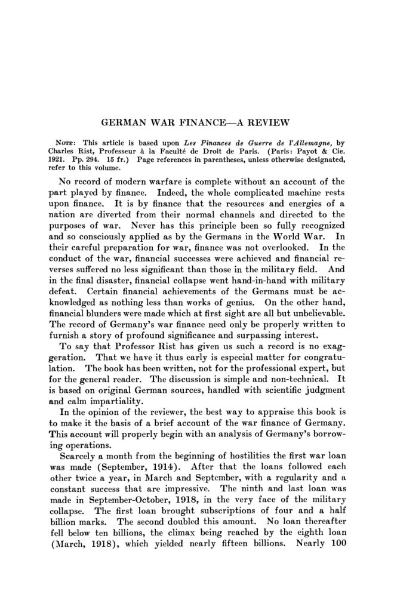

Fairchild, Rist e a conta da guerra alemã
Leitura: 8 min
A partir do livro de Charles Rist, Fred Rogers Fairchild reconstitui como a Alemanha financiou a guerra com empréstimos, notas das caixas de empréstimo e quase nenhum imposto novo, e o que veio depois.


Em 23 de julho de 1914, o último balanço do Reichsbank antes da guerra mostrava 1.890 milhões de marcos em notas contra uma reserva metálica de 1.691 milhões, quase 90%. Em 31 de dezembro de 1919, a reserva metálica cobria 3%. Entre os dois números está a história que Fred Rogers Fairchild, da Yale University, conta na American Economic Review de junho de 1922.
O ponto de partida é Les Finances de Guerre de l'Allemagne, de Charles Rist, professor da Faculdade de Direito de Paris, publicado pela Payot em 1921. Fairchild descreve o livro como escrito para o leitor geral, apoiado em fontes alemãs originais, e decide usá-lo como base de um relato breve das finanças de guerra alemãs, na ordem do próprio Rist: empréstimos, moeda, impostos, indenizações e pós-guerra.
De onde vieram os empréstimos?
O primeiro empréstimo de guerra veio em setembro de 1914, com 4.460 milhões de marcos; o segundo dobrou o valor, e nenhum dos seguintes ficou abaixo de 10 bilhões. Os nove somaram 97.619 milhões. Durante a guerra, nota o autor, os Aliados tendiam a tratar esse êxito como ilusão; para Fairchild, se houve artifício, não diferiu no fundamental das práticas de todos os beligerantes.
A venda de títulos estrangeiros ajudou pouco. Os estatísticos alemães estimavam a carteira externa em 16 a 20 bilhões de marcos no início da guerra, mas cerca de 5 bilhões estavam aplicados em países aliados e 7 a 8 bilhões em países inimigos; só 7 a 8 bilhões eram realizáveis, e cerca de 3 bilhões foram vendidos nos primeiros anos. Em setembro de 1916, o governo passou a usar esses títulos como garantia de empréstimos externos, para sustentar o câmbio.
A base real, segundo Rist, foi a poupança normal da guerra. Com o comércio exterior cortado, a marinha mercante parada e muitas indústrias de paz ociosas, o capital ficava disponível, e o Estado tornou-se o grande comprador, que pagava bem. Os lucros foram altos: a Daimler, com capital de 8 milhões de marcos, lucrou 12 milhões em 1916 e pagou dividendos de 14%, 16%, 28% e 35% nos anos seguintes a 1913. Fairchild acrescenta que a inflação monetária estimulava esses lucros, enquanto o custo de vida da maioria subia sem aumento correspondente de renda.
Como o Tesouro recolhia a poupança?
A política tinha três tempos: deixar a poupança acumular-se pelos canais normais, absorvê-la com letras do Tesouro de curto prazo vendidas a bancos, caixas econômicas, cooperativas e grandes capitalistas, e consolidar essa dívida flutuante a cada seis meses num grande empréstimo. O Reichsbank, presidido por Havenstein, recebia a maior parte das letras e tornou-se, na prática, o agente de crédito do governo. Os empréstimos nunca bastaram para resgatar todas as letras: a carteira do banco, de 4.712 milhões em 30 de setembro de 1914, chegou a pouco menos de 19 bilhões em outubro de 1918.
O instrumento mais original, diz Fairchild, foram as Darlehnskassen, caixas de empréstimo criadas na Prússia em 1848 e revividas nas guerras de 1866 e 1870. Em 1914 abriram-se 99 escritórios, que emprestavam sobre títulos e mercadorias a comerciantes, bancos, cidades e indivíduos, com notas próprias de até um marco. As notas não tinham curso legal, mas eram aceitas nas repartições públicas e, sobretudo, podiam ser contadas pelo Reichsbank como reserva. O público era incentivado a tomar emprestado nas caixas, a 5,25%, para subscrever títulos que rendiam 5,36%.
“Era fácil comer o bolo fiduciário e continuar com ele.” (“it was easy to eat the fiduciary cake and have it too.”)
O resultado foi a inflação. A circulação fiduciária, de 2.095 milhões de marcos em julho de 1914, chegou a 27.418 milhões em 7 de novembro de 1918 e a 49.628 milhões em 31 de dezembro de 1919, 24 vezes o ponto de partida. Na França, as notas do Banco da França foram de 5.433 milhões de francos em julho de 1914 a 30.617 milhões no fim de 1919. A reserva metálica alemã caiu a 22% no fim de 1917 e a 10% no fim de 1918, e os jornais deixaram de publicar a relação. O ouro do Reichsbank atingiu o máximo, dois bilhões e meio, em 15 de junho de 1917.
Por que tão poucos impostos?
Antes da guerra a carga tributária alemã era leve. Em 1902, o total de impostos na Prússia era estimado em 42,50 marcos por habitante, contra 79,57 na França e 101,44 na Grã-Bretanha. Em 1913, o prussiano médio pagava 68,40 marcos, cerca de 10% da renda; o francês, 135 francos, 15%. Empresas públicas forneciam 30% da receita bruta do império e 67% da dos estados.
O plano, exposto por Helfferich ao Reichstag em 10 de março de 1915, era cobrir com impostos apenas os juros; o custo da guerra viria de empréstimos e notas. Fairchild o identifica com o chamado plano Gallatin, da guerra americana de 1812. Uma explicação é a aposta na vitória rápida e na indenização. A outra, que o autor considera decisiva e encontra também em Rist, é constitucional: os impostos diretos e as receitas industriais cabiam aos estados, e ao império os indiretos. Só em 1906, com o imposto sobre heranças, e em 1913, com o Wehrbeitrag, o império entrou nos tributos diretos. O paralelo, nota, é a Constituição americana antes da décima sexta emenda.
O plano só foi abandonado em 1917, com o Kriegsteuer. Rist estima que, no máximo, a carga per capita de todos os impostos pouco mais que dobrou entre 1914 e 1918, e que os impostos imperiais não chegaram a triplicar, em moeda depreciada. O efeito duradouro foi institucional: a nova Constituição deu ao império o monopólio dos impostos diretos, inclusive o de renda, e as ferrovias dos estados.
Quem pagaria a conta?
Os planos alemães contavam com indenizações pagas pelos vencidos. Rist resume os autores que as anteviam e comenta com secura o entusiasmo de 1915.
“Desde 1915 a alegria de viver diminuiu consideravelmente na Alemanha.” (“since 1915 the joy of living has considerably diminished in Germany”)
Sobre as reparações, Fairchild acompanha Rist: a Alemanha só pode pagar com seus produtos ou com letras sobre países que os comprem; logo, a capacidade de pagamento depende do comércio exterior, e boicote ou protecionismo são incompatíveis com a cobrança. O pós-guerra repete o padrão. O orçamento de 1920 previa gastos de 55 bilhões de marcos e receitas de 25 bilhões; o de 1921, 234 bilhões contra 72; para 1922, a estimativa preliminar indicava déficit de 183 bilhões a cobrir com crédito. As notas do Reichsbank foram a 68.805 milhões no fim de 1920, 113.639 milhões no fim de 1921 e 115.755 milhões em 15 de fevereiro de 1922. O fim, conclui o autor, ainda estava por ver.
Na minha leitura
Na minha leitura, o centro do texto é a separação entre a regra formal e a substância monetária. A cobertura de um terço foi preservada no papel enquanto as notas das caixas de empréstimo, contadas como reserva, permitiam emitir sem limite efetivo; depois, a troca de notas por depósitos reduziu a circulação visível sem alterar o volume de crédito ao Tesouro. Fairchild mostra que acompanhar só o indicador oficial esconde exatamente o que ele deveria revelar.
O segundo ponto é a ligação entre federalismo fiscal e financiamento de guerra. A escolha por empréstimos e emissão aparece não só como aposta militar, mas como consequência da repartição de tributos entre império e estados. Mudar essa repartição exigiu uma nova Constituição; enquanto isso, o déficit se transferia para a moeda.
Glossário
- Reichsbank
- banco central do império alemão, emissor das notas e principal comprador das letras do Tesouro.
- Letras do Tesouro
- títulos de curto prazo usados pelo governo para financiar-se entre um empréstimo de guerra e outro.
- Darlehnskassen
- caixas de empréstimo que emprestavam sobre títulos e mercadorias com notas próprias, aceitas como reserva do Reichsbank.
- Cobertura de um terço
- regra que exigia reserva em espécie de ao menos um terço das notas emitidas pelo Reichsbank.
- Plano Gallatin
- financiamento de guerra por empréstimos, com impostos apenas para os juros, associado à guerra americana de 1812.
- Wehrbeitrag
- contribuição extraordinária de defesa criada em 1913 sobre o patrimônio.
- Reparações
- pagamentos impostos ao país derrotado para cobrir danos e custos de guerra dos vencedores.
Fontes
- German War Finance--A Review — Fred Rogers Fairchild (Yale University) (pp. 246–261). JSTOR · Internet Archive (PDF)
- Edição completa, com os demais artigos: Nº 176 do Arquivo.
Documento em domínio público (EUA, publicado antes de 1931), via JSTOR Early Journal Content e Internet Archive. Resumo e comentário do autor deste site, sem afiliação com a American Economic Association. Encontrou um erro? Escreva: a correção é publicada no próprio texto, com data.
← Hewes e as guildas que saíram do papel ↑ Nº 176 · As guildas inglesas, a guerra alemã a crédito e as zonas francas